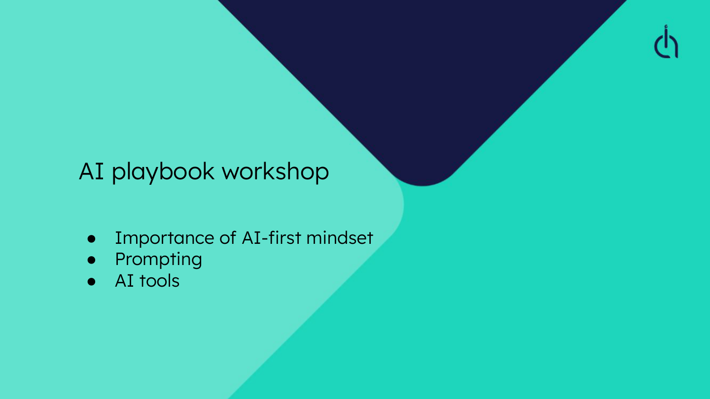
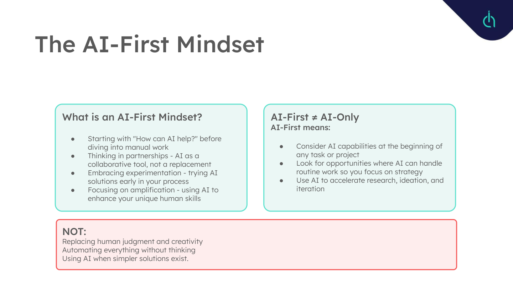
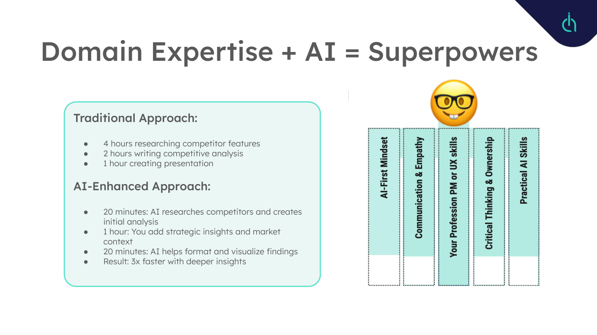
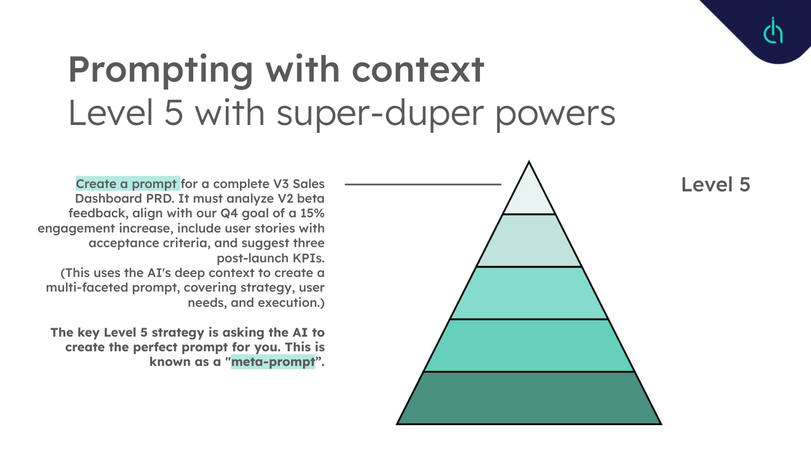

Building AI Capability Across 40 People
How a training programme built from scratch changed not just what tools people used, but how they approach every task.
The stakes
In 2023, the organisation had no AI literacy and no integration strategy. People fell into two camps: those ignoring AI entirely, and those experimenting without direction. Neither was producing results. The gap was not in access to tools. Everyone had accounts. The gap was in knowing what to do with them.
The risk was real. Competitors were moving faster. Internal teams were spending days on work that could take hours. And the longer the organisation waited for a formal strategy, the wider the gap between what was possible and what was actually happening.
What I built
I designed and delivered an AI Playbook Workshop that became the foundation for the organisation's AI adoption. The programme was not a tools tutorial. I structured it around a core principle: AI-First does not mean AI-Only. It means considering AI capabilities at the beginning of any task, not replacing human judgement.


The AI Playbook Workshop I built and delivered to 40+ colleagues across design and product. The opening framed AI-First as a mindset shift, not a tool adoption exercise.
The five-level prompting framework
The centrepiece of the programme was a structured progression through five levels of prompting competence. Each level built on the previous one, moving from basic task framing to sophisticated meta-prompting strategies.
At Level 1, people learn to articulate a clear task. At Level 2, they add quality modifiers. By Level 3, they are providing domain-specific context. Level 4 introduces project knowledge: pre-loading AI with research, OKRs, and constraints so that even simple prompts produce highly specific outputs. Level 5 is the shift that changes everything: asking the AI to create the prompt for you. This meta-prompting approach produces results that most people cannot achieve through direct instruction alone.


Left: the competitive analysis example showing 3x speed improvement with deeper insights. Right: Level 5 meta-prompting, where the AI creates the prompt. This was the moment adoption accelerated.
Beyond prompting: workflow automation
The programme extended beyond prompting into practical workflow automation. I covered three platforms at different complexity levels: Zapier for quick wins, Make.com for visual workflow builders, and n8n for technical teams who wanted full control. Each was mapped to specific EdTech use cases: automated student success alerts, feedback-to-backlog pipelines, and release communication workflows.
I also introduced research synthesis tools. NotebookLM became central to how teams processed large documents: creating audio overviews, mind maps, and structured summaries from uploaded sources. This was particularly valuable for product marketing, where synthesising competitive intelligence had previously consumed days.
What changed
The measurable outcomes were clear. But the more important change was behavioural. Teams that previously spent days synthesising research findings could now produce structured analysis in hours. People began asking different questions. When you know what the algorithmic assistants can handle, you stop accepting slow manual processes as inevitable.
Results
Over 40 colleagues across design and product completed the programme.
Research synthesis reduced from days to hours.
Manual workflows cut by over 60% through automation.
The programme became a recurring workshop, not a one-off event. New joiners go through it as part of onboarding.
What I learned
The biggest obstacle to AI adoption is not technical. It is emotional. People worry about being replaced, about looking foolish for not knowing enough, about trusting outputs they cannot fully explain. The programme worked because it addressed those concerns directly. The AI-First framing gave people permission to experiment. The five-level structure gave them a clear path from beginner to advanced. And the emphasis on human skills, the things AI cannot replace, gave them confidence that their expertise still mattered.
I also learned that the best way to drive adoption is not to advocate for it. It is to make the results visible. When one team cut their research cycle from three days to three hours, the rest of the organisation did not need convincing. They needed access to the same programme.